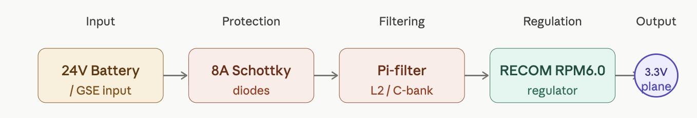
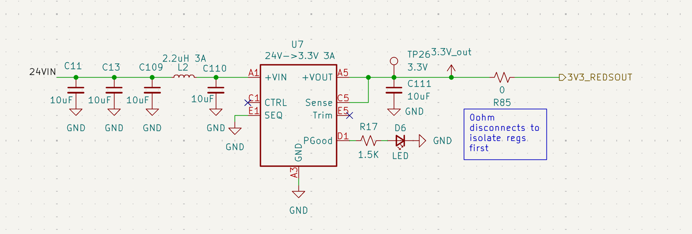

Voltage Regulation
Overview
The Rocket2 ECU uses a high-efficiency switching regulator to step down the 24V primary battery bus to a stable 3.3V logic rail. This rail powers the STM32, all onboard sensors, and communication modules.

Figure 2: Voltage Regulation System DiagramHardware Specifications
| Parameter | Value | Note |
|---|---|---|
| Regulator (U7) | RECOM RPM6.0-3.3 | LGA Power Module |
| Input Range | 24V Nominal | Protected against transients |
| Output Current | 6.0A Max | Limited by L2 (3A) |
| Switching Freq | 500 kHz | RECOM RPM6.0-3.3 fixed frequency PWM |
Connections & Interfaces
- 24VIN: Primary power input sourced from the Battery/GSE bus via a dedicated barrel jack or XT60.
- 3.3V_out: The regulated output of the U7 RECOM module.
- Test Point (TP26): Main 3.3V probe point located immediately after the inductor/capacitor stage.
Regulator Schematic

*Figure 3: Voltage Regulation: SchematicDesign Details
Input Stage & Pi-Filter
- 24V Diodes: Upgraded to 100V 8A Schottky diodes to prevent back-feeding and allow high-current supply for propulsion requirements.
- Pi-Filter: To block inductive noise, a filter is implemented using C11, C13, C109, C110 (10µF each) and L2 (2.2µH).
- Note: L2 is 3A rated; if 6A logic draw is required, this component must be bypassed/upgraded.
Status & Control Logic
- Visual Status: LED D6 (Green) is tied to the
PGoodpin. It illuminates only when the 3.3V rail is stable (>90% of nominal). - Always-On Logic: The
CTRLpin (C1) is NC (No Connection), ensuring the regulator initializes immediately upon 24V application.
Bringup, Failure Modes, & Debugging
- Bringup: Ensure R85 Isolation during testing. Confirm LED ON status prior to powering stm32.
- Troubleshooting: If LED D6 is Dim/Off --> remove R85, check resistance to GND.
- Debugging: Test Point (TP26): Main 3.3V probe point located immediately after the inductor/capacitor stage.